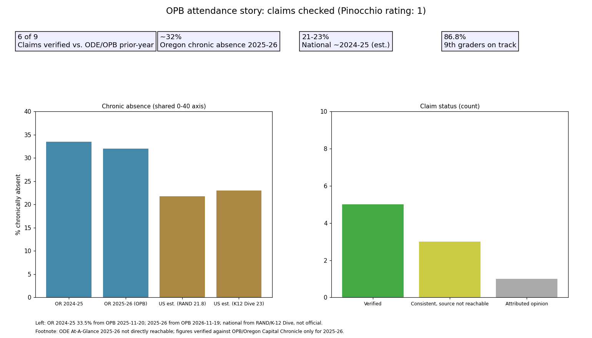

The OPB piece (Oregon Capital Chronicle, Alex Baumhardt, 2026-11-19) is substantially accurate: Pinocchio rating 1 (minor issues). Its 2025-26 figures could not be checked against ODE's own At-A-Glance release; only the 2024-25 comparisons were confirmed.
| Claim | Status | Source |
|---|---|---|
| 2024-25 9th grade on track 86.6% | Verified | OPB 2025-11-20 |
| 2024-25 chronic absence 33.5% | Verified (article says 35% for 9th graders only, no check) | OPB 2025-11-20 |
| 86.8% record, 36,200, 473 fewer | Consistent, secondary only | OPB 2026-11-19 |
| ~32% chronic vs ~21% national | Plausible, mismatched basis | RAND, K-12 Dive, AEI |
| SB 817 removed penalties | Verified | ODE SB817 guidance, legislative analysis |
| Williams quote, Wells quote | Not checkable here | Original source needed |
Confidence: medium. Primary ODE 2025-26 data was not accessed.